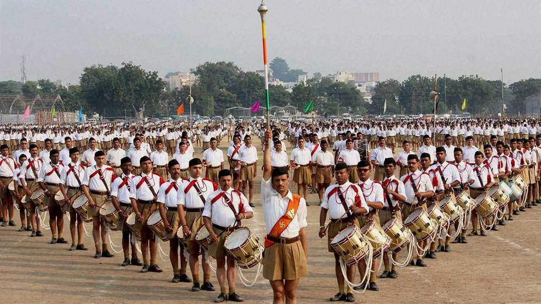

शिविर (Shakha)
स्थानीय स्तर पर नियमित मिली-जुली गतिविधियाँ और प्रशिक्षण।
संघ के इतिहास, उद्देश्य, संरचना, गतिविधियों और विचारधारा पर आधारित तथ्यात्मक जानकारी
RSS में सदस्यता लें?राष्ट्रीय स्वयंसेवक संघ (RSS) भारत का एक प्रमुख सामाजिक-सांस्कृतिक संगठन है, जिसकी स्थापना 1925 में नागपुर में डॉ. केशव बलिराम हेडगेवार ने की थी। इसका उद्देश्य भारतीय समाज को संगठित कर राष्ट्रीय एकता, सामाजिक समरसता और सेवा का भाव जगाना है।
पूर्ण इतिहास, विचारधारात्मक संघर्ष और प्रमुख घटनाओं के लिए नीचे “स्रोत” अनुभाग देखिए।
RSS का मुख्य उद्देश्य “हिंदू समाज को संगठित करना” और “राष्ट्रीय चरित्र निर्माण” है। संगठन “हिंदुत्व” के विचार को सांस्कृतिक, सामाजिक और नैतिक उत्थान के रूप में प्रस्तुत करता है।
संघ का नेतृत्व “सरसंघचालक” (मुख्य) करते हैं। अखिल भारतीय प्रतिनिधि सभा (ABPS) नीति-निर्धारण की सर्वोच्च संस्था है। देशभर में शाखा, जिला, प्रांत, और क्षेत्र जैसे स्तर हैं — हर इकाई में चयनित स्वयंसेवक नेतृत्व करते हैं।
RSS सामाजिक कार्य, आपदा राहत, शिक्षा, स्वास्थ्य, ग्राम विकास, एवं संस्कृतिक आयोजनों से जुड़े कई प्रकल्प संचालित करता है। प्रमुख वार्षिक आयोजन “विजयादशमी उत्सव”, “संघ शिक्षावर्ग” आदि हैं।
प्रशिक्षण शिविर, सामुदायिक सेवा, शिक्षा सम्बन्धी पहल, राहत कार्य और सामाजिक कार्यक्रम — ये संगठन की सामान्य गतिविधियाँ बताई जाती हैं।
RSS सामाजिक कार्य, आपदा राहत, शिक्षा, स्वास्थ्य, ग्राम विकास, एवं संस्कृतिक आयोजनों से जुड़े कई प्रकल्प संचालित करता है। प्रमुख वार्षिक आयोजन “विजयादशमी उत्सव”, “संघ शिक्षावर्ग” आदि हैं।
स्थानीय स्तर पर नियमित मिली-जुली गतिविधियाँ और प्रशिक्षण।
आपदा राहत, रक्तदान, स्वास्थ्य शिविर इत्यादि।
शाला, संस्थानों के माध्यम से युवाओं का विकास।

और भी स्रोत जोड़े जा सकते हैं – मुख्य संवाद/FAQ या संगठनों की वेबसाइट/खबरें।
हमारे न्यूज़लेटर से जुड़िये और RSS संबंधी ताज़ा अपडेट सीधे अपने ईमेल पर पाएं।